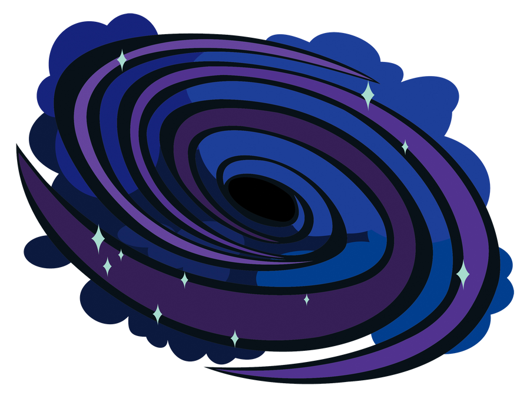

The Galaxys
Galaxies are fascinating structures that exist throughout the vast expanse of the universe. These massive collections of stars, gas, and dust come in a wide variety of shapes and sizes, from small dwarf galaxies to massive elliptical galaxies with trillions of stars.
Black Holes
Black holes are one of the most fascinating and mysterious objects in the universe. These cosmic monsters are formed when massive stars collapse in on themselves, creating an incredibly dense and powerful gravitational force that sucks in anything nearby, including light.
Stars
Stars are massive balls of gas, primarily made up of hydrogen and helium, that produce energy through nuclear fusion. The energy created by this process is released as light and heat, which we see as the twinkling stars in the sky.